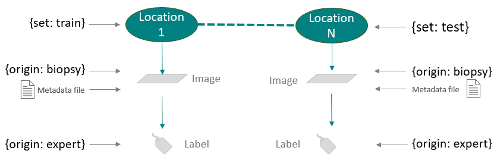

Guide#
SciXTracer is a python library to ease interaction with datasets all along the data science journey. It aims at being a generic API for read and write data (array, table, values, labels) with associated annotations and metadata. SciXTracer API is based on a plugin architecture to allow using any storage depending on the user needs.
Why SciXTracer#
When developing data science workflow, it is a pain to write dedicated code to interact with data storage
When deploying a data science workflows, it is a pain to re-write the data processing script to match the infrastructure API
Ensuring traceability (FAIR principles), of data and results is an extra-work for data-scientists to include code for metadata generation in the analysis scripts
SciXTracer tends to encapsulate storage, deployment, and traceability into a unique API. Write one code, deploy it on any AI platforms
Principles#
Principle 1: Fair principles first#
The aim of SciXTracer is to avoid loss of information and guaranty traceability of any result generated by any data science pipeline. A data science pipeline writen using SciXTracer stores all the results and associated metadata without asking extra (error prone) work
Principle 2: Focus on simple API and usability#
Data science pipeline should not care about how data are stored, how metadata are stored, how the code is parallelized. Data science pipeline should be over simple easy to write and easy to read. It should focus on the data science logic and not on backend or storage logic.
Only high level methods should be used to interact with the storage like get_dataset,
get_data, set_data…
Principle 3: Interoperability#
Data science API should not re-invent data structure, but be compatible with the existing ecosystem for an optimal data scientist experience. Array structure should be compatible with Numpy, PyTorch, TensorFLow, Dask…, Table structure should be compatible with Pandas, SPolars, Spark…
Design#
SciXTracer is a dataset management library designed around three main concepts:
Location
Annotation
Metadata
Each data in a dataset is indexed using the three concepts above. Lets describe deeper what they mean.
Location: Each data is associated to a location. The purpose of a location is to define a unique root to data that are from a unique source. For example, in image classification application and image and it label will share the same location, and each images-label pairs will have distinct locations. This location concept is fundamental to trace transformation one the data. All derived data from a raw data will share the same location from it parent data.
Annotation: Annotations in SciXTracer are key-value pairs used to identify data. As many annotations as needed can be added to data. Annotations are a core concept of SciXTracer to enable access to data using queries. We can distinguish two types of annotations: location annotations and data annotations. Location annotations are attached to a location. They are thus shared to all the data located at the same location. Data annotations are attached to a single data.
Metadata: Metadata are optional in SciXTracer. Nevertheless, they are very important to match the FAIR principles. A metadata document can be associated to each data. For row data, metadata are usually information about the conditions of the data collection like device serial number and settings for imaging. For processed data, metadata store the information (or graph) of the processing pipeline that generated the data. For example, in an image classification dataset, we can have a predicted label. In this cas, the metadata will store the model version and parameters that make this prediction.
The figure bellow show an example of data structure for an image classification example using the location, annotation, metadata design:
{kind=link}
How to#
This section show a basic introduction on how to use SciXTracer. Please refer to the API documentation for more advanced features.
Create a dataset#
SciXTracer store datasets in the backend storage. Then, the user does not need to specify any path or credential to the storage. All is managed with the SciXTracer API:
import scixtracer as sx
dataset = sx.new_dataset("my dataset name")
sx.set_description(dataset, {"desc": "This is a short description"})
With a single line of code, we tell SciXTracer to create a new dataset in the storage without caring about the structure of the storage space. The description content is a json document that can contain any keys.
Import data#
Data can be imported to a SciXTracer dataset with a simple line of code:
my_array = np.zeros((512, 512))
sx.new_data(dataset, my_array, loc_annotate={"set": "train"}, data_annotate={"origin": "biopsy"})
In this case, the we pass dataset to the new data, so first a new location will be created, and
then the data will be added to this location.
The same can be donne in two operations if we need to manually create a new location
my_array = np.zeros((512, 512))
location = sx.new_location({"set": "train"})
sx.new_data(location, my_array, data_annotate={"origin": "biopsy"})
We can then reuse the location object to create new data to the same location.
Query data#
SciXTracer provides a series of query methods to query location, annotations and data. For example, we can query all the data of the train set with the biopsy origin:
import scixtracer as sx
dataset = sx.get_dataset("my dataset name")
data_info = sx.query_data(dataset, {"set": "train", "origin": "biopsy"})
In this case, the query_data will return the list of scixtracer.models.DataInfo with the
information of all the data that match the query. Then if we need to acces the data value, we can
use the method scixtracer.api.read_data().
More sophisticated can be done as explained in the API documentation scixtracer.api.query_data()
If we need to access the data directly, the same method can be called with the option info_only
to False. This will return a scixtracer.api.DataIter, an iterator that lazy load the data
content
import scixtracer as sx
dataset = sx.get_dataset("my dataset name")
data_iter = sx.query_data(dataset, {"set": "train", "origin": "biopsy"}, info_only=False)
for data in data_iter:
do_something(data.value) # Do something with the data value that is an Array in this example
Process data with call#
With the scixtracer.api.new_data() and scixtracer.api.query_data() functions, wa can
already write some data processing pipeline. We query the data we want to process, loop on the
query result, process the data and save the result:
import scixtracer as sx
from my_lib import my_model
dataset = sx.get_dataset("my dataset name")
data_info = sx.query_data(dataset, {"set": "train", "origin": "biopsy"})
for data in data_info:
value = sx.read_data(data)
prediction = my_model(value, threshold=0.8)
sx.new_data(data.location,
prediction,
data_annotate={"prediction": "baseline"},
metadata={"func": my_model.__name__,
"inputs": [data.uri.value, 0.8],
"output_id": 0})
But, we can see that writing such code is quite verbose since we need to call read method for each input, and create a new data for each output. In the example above, we also added metadata to enable traceability of the results.
In order to simplify the code and the automation of the metadata generation, SciXTracer have a
build in decorator scixtracer.api_runner.call(). This decorator encapsulate all the code for
reading, writing the data and metadata. The same script for loop is now one line of code:
import scixtracer as sx
from my_lib import my_model
dataset = sx.get_dataset("my dataset name")
data_info = sx.query_data(dataset, {"set": "train", "origin": "biopsy"})
for data in data_info:
sx.call(my_model)([{"prediction": "baseline"}], data, 0.8)
The scixtracer.api_runner.call() decorator transforms the python function my_model on a
function that operated on scixtracer.models.DataInfo and annotations. The first argument is
a list of annotations for the function outputs, and the other arguments are the input arguments of
the function.
Run a job with run#
The advantages of the scixtracer.api_runner.call() is that it allows to easily prototype a
data processing pipeline with few line of codes with automation of the storage management.
Nevertheless, is does not enable parallel computing especially for the case of the embarrassingly
parallel for loop above.
This is why SciXTracer introduce the scixtracer.api_runner.run() API. This allow defining a
data processing pipeline as a collection of jobs, and then parallelize the jobs computing:
import scixtracer as sx
from my_lib import my_model
dataset = sx.get_dataset("my dataset name")
my_job = sx.Job(func=wiener_filter,
inputs=[{"set": "train", "origin": "biopsy"}, 0.8],
outputs=["prediction": "baseline"])
sx.run([my_job])
With this syntax, scixtracer.api_runner.run() will build a computation graph based on the
query results of each jobs and pass that graph to the backend that will execute it with parallel
capabilities depending on the backend plugin.
Train a model#
TODO